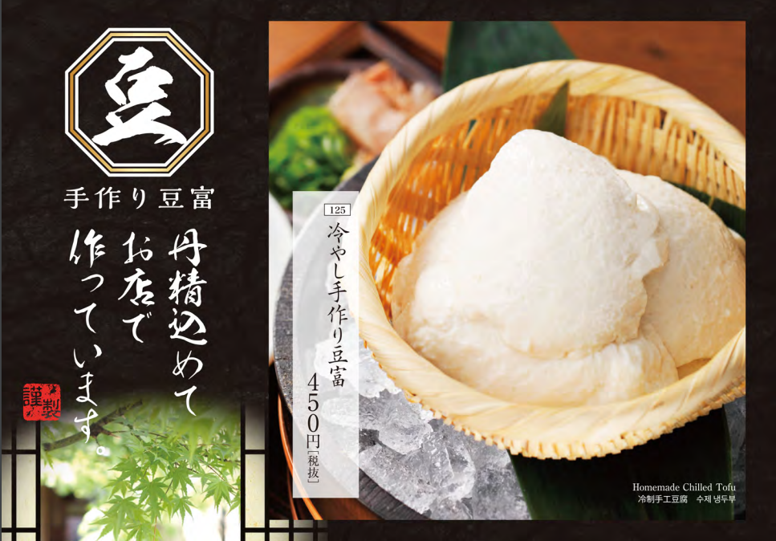
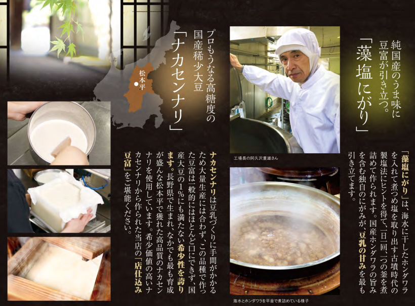
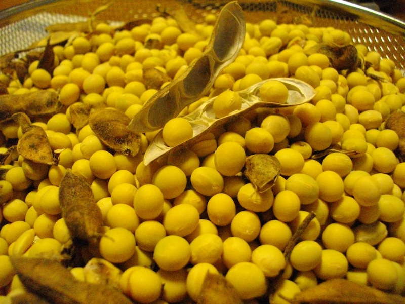

居酒屋の定番メニュー‥みんな大好き枝豆ヽ( ´豆腐ヽ( ´￢油揚げヽ( ´￢`考えたら全部大豆ヽ( ´￢`)味噌や醤油の調味料も大豆ヽ( ´￢`)ノそんな大豆にこだわったお店を発見しました|ω・`）
千年の宴では豆腐は豆富と表記するこだわりようです。特におすすめの『豆富』メニューは大豆の銘柄にもこだわっていて『ナカセンナリ』という大豆を使用しているそうですよ。
大豆だけではなく、凝固剤にもこだわっていて、化学合成したカルシウムやマグネシウムは一切使用していないそうです。消泡剤等も使用せず天然の藻塩と選びぬかれた『ナカセンナリ』のみ使用し造られており、市販の豆腐とは違い深い味わいとまろやかな甘味が特徴です。
 豆富好きには朗報、卓上で豆乳から作れるできたて豆富もありました。湯葉がまず出来上がっるくるので、すかさず食します！また！出来上がってきたので食します。。。食します。
(ﾟAﾟ;)ｱﾂｰ
食べ過ぎると肝心の豆富が少なくなるので注意Σ(ﾟДﾟ；≡；ﾟдﾟ)！！湯葉はこれくらいにし、火を消して『藻塩にがり』を入れ、軽くかき混ぜ蓋をして5分程待ちます。ふんわりとした所謂『にがり豆富』が出来ました。
おぼろ豆腐はおぼろ月夜のような、もやもやした状態に似ていることが名前の由来だそうです。
見た目はヨーグルトみたいですが、ふわふわしてやわらかく味も濃厚で一度食べるとやみつきです！
(゜д゜)